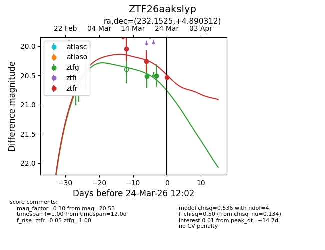
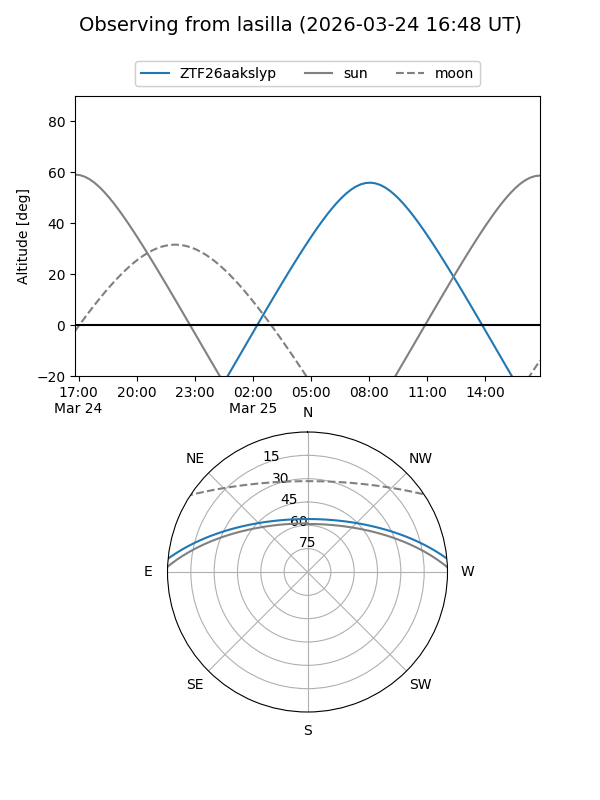
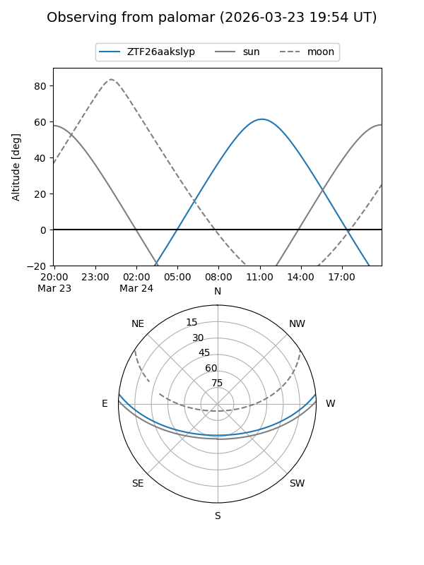
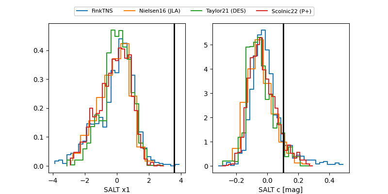

ZTF26aakslyp
Target ZTF26aakslyp at 2026-03-24 12:05
Aliases and brokers:
FINK: link
Lasair: link
ALeRCE: link
alt names
ZTF26aakslyp (ztf,fink_ztf)
Coordinates:
equatorial (ra, dec) = 232.1525,+4.89031
equatorial (HMS+DMS) = 15:28:36.60,+04:53:25.12
galactic (l, b) = (9.3266,+46.48064)
Flags:
Photometry:
last ztfg=20.50, ztfr=20.53
2 ztfg, 3 ztfr detections
Lightcurve

Visibility


Additional plots
